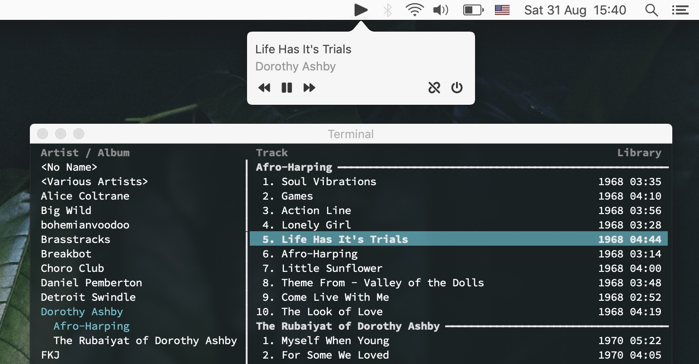

cmusie
cmusie is a small utility app to control cmus playback on MacOS.

The app captures audio playback button inputs on MacOS and reroutes them to cmus. It comes with a small tray icon that can show currently playing song, along with button controls.
The project is written in Objective-C, with the low-level media keys control code borrowed from mpv.
Source code: https://github.com/nkanaev/cmusie